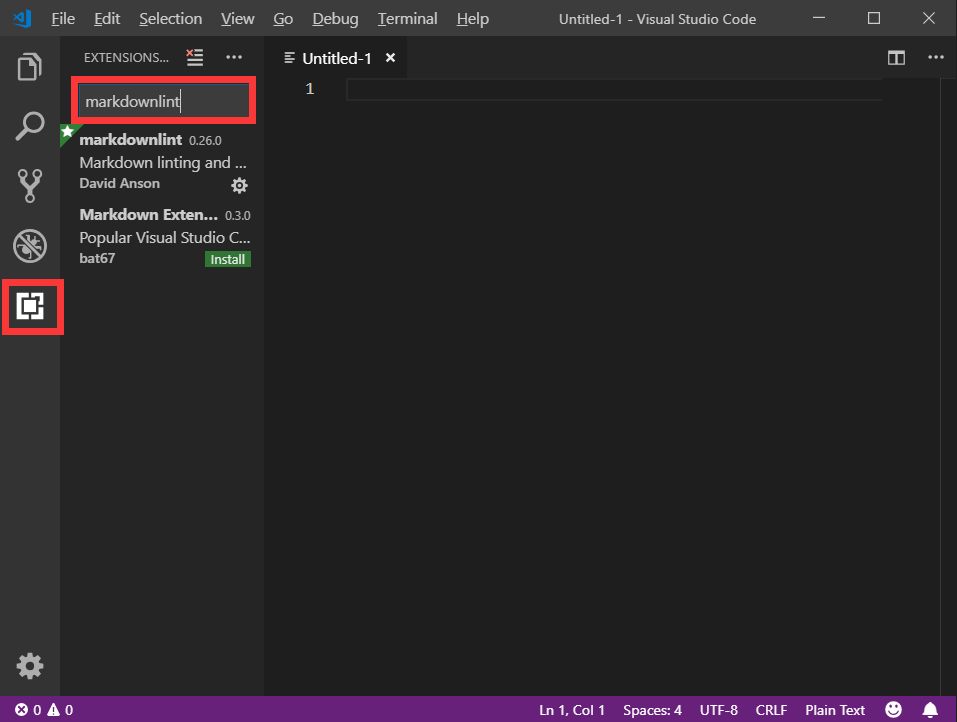

安装VSCode和markdownlint
安装VSCode
先贴一Visual Studio Code官网(https://code.visualstudio.com/)
打开是如下界面

点击红框下面的下拉箭头，选择适合系统的安装文件，点击下载，下载完成后运行 VSCodeUserSetup-x64-1.33.1.exe
如果没有什么特殊要求就一路默认安装即可。
安装markdownlint
打开VSCode，在下图所示位置输入 markdownlint

点击进入，出现下述界面

点击红框中的 install
安装结束~
撰写新的文章
新建一篇文章
找到博客主目录文件，右键选择 Git Bash Here，输入如下命令hexo new post "文章的名字"
找到文章路径
打开 博客主目录文件 -> source -> _posts -> 你文章的名字
右键选择 打开方式 ，选择 Visual Studio Code ，打开页面如下：
markdown 的基本语法
markdown 的语法大部分都非常简单，一般来说，稍微看一看都能迅速写出文章。吹爆！至于绘制公式等复杂的用法，以后用到会来更新~
标题语法
标题语法是这样的：
第一级标题，开头是一个#
第二级标题，开头是两个##
第三级标题，开头是两个###
……
请注意，标题需要独自占据一行，并且在标题的文字和 # 之间需要有一个空格，不然可能会不被识别。同时，markdown只支持六级标题，六级以上的标题不存在鸭~
# 一级标题
## 二级标题
### 三级标题
#### 四级标题
##### 五级标题
###### 六级标题
####### h7 // 错误代码
######## h8 // 错误代码
######### h9 // 错误代码
########## h10 // 错误代码字体语法
加粗
要加粗的文字左右分别用两个*号包起来
比如：**加粗以后我就是最靓的仔**
效果：
加粗以后我就是最靓的仔
斜体
要倾斜的文字左右分别用一个*号包起来
比如：*整条街就我最横*
效果：
整条街就我最横
斜体加粗
要倾斜和加粗的文字左右分别用三个*号包起来
比如：***我又靓又横我最牛批***
效果：
我又靓又横我最牛批
删除线
要加删除线的文字左右分别用两个~~号包起来
比如：~~WTF!当我没说这句话~~
效果：
WTF!当我没说这句话
引用语法
引用需要的一个特殊符号是 >，使用方法依旧很简单，只需要在引用的行首加上 > 就可以啦！多行引用就在连续的每一行之前都加上 >
比如说
> 爱的魔力转圈圈，想你想到心花怒放黑夜白天
> 可是我害怕爱情只是一瞬间，转眼会不见
> 我要慢慢冒险上面的markdown效果就是:
爱的魔力转圈圈，想你想到心花怒放黑夜白天
可是我害怕爱情只是一瞬间，转眼会不见
我要慢慢冒险
代码标记语法
感觉会来捣腾这样一个博客的，基本都会和程序员搭上点边？？？
那么，在自己的文章中把代码高亮出来的这种操作一定也是非常常用啦！
在这里，和大家分享三种标记代码的方式：行内代码标记高亮代码块标记。
行内代码标记
行内的标记语法 需要通过两个 ` 把需要被标记的内容包起来，注意，这个符号就是键盘上在数字 1 左边的那个符号。
比如：爱的魔力转圈圈 `爱的魔力转圈圈` 爱的魔力转圈圈效果：
爱的魔力转圈圈爱的魔力转圈圈爱的魔力转圈圈高亮代码块
这种代码标记的方式可以显示行号，并且可以根据你指定的代码语言对代码进行高亮。为了使用这种标记方式，我们需要在代码块的上方和下方各添加一个以三个反引号开头的行，这个符号也是键盘上数字 1 左侧的符号。
在开头行的三个反引号后写上代码所使用的语言即可对代码块进行语法高亮(彩色)。不加的话显示为黑白效果。比如
这里有三个反引号Java var executeSync = function(){ var args = Array.prototype.slice.call(arguments); if (typeof args[0] === 'function'){ args[0].apply(null, args.splice(1)); } }; 这里有三个反引号效果：
var executeSync = function(){ var args = Array.prototype.slice.call(arguments); if (typeof args[0] === 'function'){ args[0].apply(null, args.splice(1)); } };
列表语法
在我们需要按条列举一些内容时，我们可以使用两种方式来展示。
- 第一种是直接使用
[数字].[空格][内容]的方式实现
比如：
1. 爱的魔力转圈圈
2. 想你想到心花怒放黑夜白天
3. 可是我害怕爱情只是一瞬间
4. 转眼会不见，我要慢慢冒险效果：
- 爱的魔力转圈圈
- 想你想到心花怒放黑夜白天
- 可是我害怕爱情只是一瞬间
- 转眼会不见，我要慢慢冒险
- 第二种是用
*代替数字，使用[*][空格][内容]的方式实现
比如：
* 爱的魔力转圈圈
* 想你想到心花怒放黑夜白天
* 可是我害怕爱情只是一瞬间
* 转眼会不见，我要慢慢冒险效果：
- 爱的魔力转圈圈
- 想你想到心花怒放黑夜白天
- 可是我害怕爱情只是一瞬间
- 转眼会不见，我要慢慢冒险
链接语法
生成链接的markdown语法有两种，一种是内联式，一种是引用式。
- 内联式
内联式的链接由连续的一对中括号和一对小括号组成，中括号里的内容是链接显示出来的文字，小括号里的内容是链接的地址，写法为[你想要展示给大家的链接的名称](链接地址)
比如:
[这是一个小仙女的碎碎念博客](https://jiyali.github.io/) 效果：
这是一个小仙女的碎碎念博客
此外，如果想要跳转到同一页面的某个标题处，只需要将链接的位置的内容修改为井号并加上标题名称即可，写法为：[你想要的展示给大家的链接的名称](#本页面的标题名称)
比如：
[我来教大家怎么写标题~](#标题语法) 效果：
我来教大家怎么写标题~
点击上面的链接就调到了标题语法的章节，有木有很方便~
- 引用式
写论文的时候会用到各种引用，在markdown中也有非常方便的引用式的链接，写法为：[空格][你想要展示给大家的链接名称][链接的标号][空格]，然后在任意位置写引用标签，写法为：[刚才的链接的标号]：链接地址。
比如：
在这里我们将要引用一篇论文，论文题目为 [《Show and Tell: A Neural Image Caption Generator》][1]
[1]:https://arxiv.org/pdf/1411.4555.pdf 效果：
在这里我们将要引用一篇论文，论文题目为 [《Show and Tell: A Neural Image Caption Generator》][1]
[1]:https://arxiv.org/pdf/1411.4555.pdf
插入图片语法
配置文件
打开博客主目录文件 -> _config.yml -> 搜索post_asset_folder 选项 -> 设置为 true
安装图片插件
找到博客主目录文件 -> 右键 Git Bash Here -> 执行 npm install hexo-asset-image --save -> 等待安装完成
生成新的博文
找到博客主目录文件 -> 右键 Git Bash Here -> 执行 hexo new post '文章题目' ，就可以看到/source/_posts文件夹内除了xxxx.md文件还有一个同名的文件夹，而我们文章中需要引用的图片会放在这个文件夹下面~
语法
向文中插入图片的方式和链接是十分类似的，只需要在链接语法前加上一个 ! 即可，其中，中括号中的内容是鼠标移到图片上时显示的描述。写法： 
比如：
效果：

酱然后就是hexo三联，提交就能看见我们的博客啦:基本上实现小学生水平的图文并茂~hexo cleanhexo ghexo s
是不是不那么乱七八糟啦
参考：
学会写作和你的Hexo博客一起愉快地玩耍吧
hexo生成博文插入图片
markdown作者的英文文档
附带markdown作者的中文文档
学会看技术文档是个好习惯！(ง •_•)ง